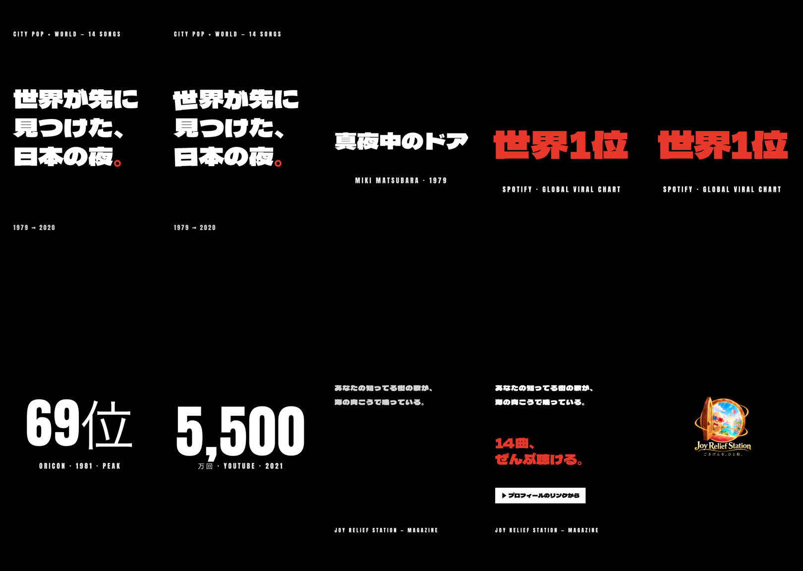
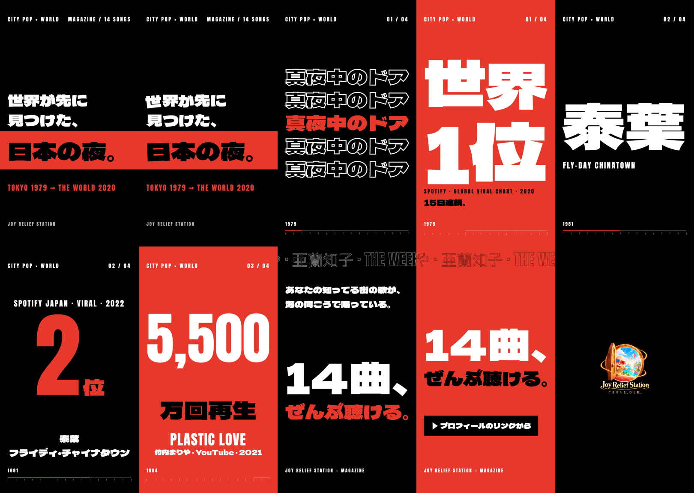
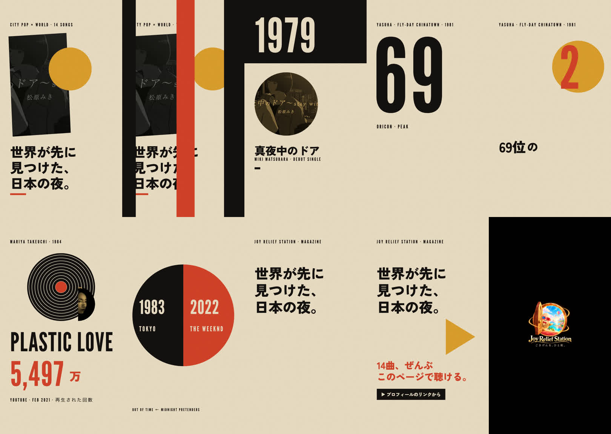
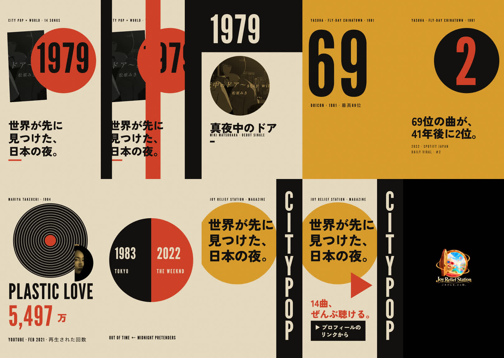
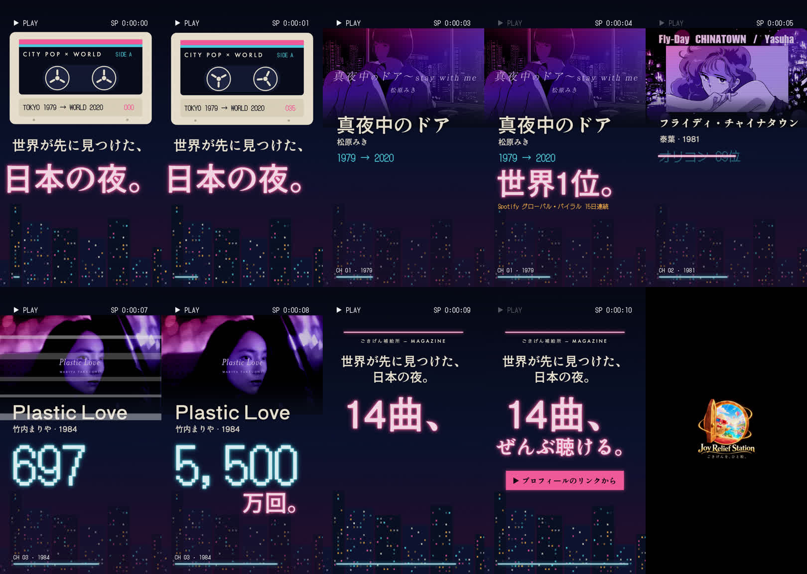

B案 前回v2（10コマ）

B案 今回v3（10コマ）

C案 前回v2

C案 今回v3

A案 前回v2
A案 今回v3

[A] Duration: 00:00:13.00 / 1080x1920 30fps h264 + aac / 12.0秒 ロゴの見える部分 w382 h398 (x350,y749) [B] Duration: 00:00:13.00 / 1080x1920 30fps h264 + aac / 12.0秒 ロゴの見える部分 w382 h398 (x350,y749) [C] Duration: 00:00:13.00 / 1080x1920 30fps h264 + aac / 12.0秒 ロゴの見える部分 w382 h398 (x350,y749) ロゴ画像の枠: 450x450px（見本の枠900pxの半分。透明の余白を含む）





| 確認項目 | 結果 |
|---|---|
| 13.00秒・縦1080×1920・音あり | 3本とも ffmpeg 実測 13.00秒 |
| 最後の2秒は新ロゴ（ズームなし・見本の半分） | 11.0〜13.0秒 黒地にロゴ（実測 見える部分 w382 h398） |
| 3案で世界観・書体・動きが別物 | A=紺＋ネオン/Shippori・DotGothic／B=黒白赤/Dela Gothic・Anton／C=紙色＋辛子＋朱/Zen Kaku・League Gothic |
| 第三者採点85点以上 | A 67・B 75・C 78点＝未達 |